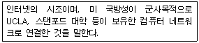
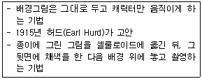
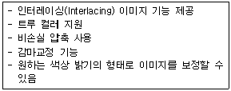
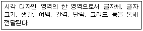
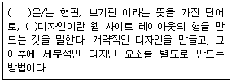

웹디자인기능사 (2013-01-27 기출문제)
1과목: 디자인 일반
1. 시각적 질감의 예로 성격이 다른 하나는?
- 사진의 망점
- 인쇄상의 스크린 톤
- 대리석 무늬
- 모니터 주사선
(정답률: 83%)

2. 조형디자인에서 점, 선, 면 등이 연장, 발전되고 밀접한 관계에서 이루어지는 조형디자인 요소는?
- 형태
- 색채
- 크기
- 질감
(정답률: 92%)
3. 색채의 연상과 상징이 맞게 연결된 것은?
- 빨강 : 열, 위험, 자극적, 고요함
- 노랑 : 금발, 경쾌, 떠들썩함, 바다
- 녹색 : 평화, 안전, 휴식
- 보라 : 외로움, 고귀함, 허무, 장례식
(정답률: 85%)
4. 독일공작연맹(DWB)에 대한 설명으로 옳은 것은?
- 유겐트(Jugend)라는 신문을 중심으로 양식이 전개되면서 청춘양식이라고 불렸다.
- 이들의 새로운 조형운동은 권위적이고 세속적인 과거의 모든 양식으로부터의 분리를 주장하였다.
- 대표적인 작가로 구스타프클럼트, 요셉 호프만 등이다.
- 창립의 중심인물은 무테지우스이며 공업문명을 중심으로 조형을 발전시키고자 하였다.
(정답률: 67%)
5. 균형의 가장 정형적인 구성 형식이며, 균형이 잘 잡힌 상태로 통일감을 얻기 쉬우나 딱딱한 느낌을 주는 원리는?
- 대칭
- 비대칭
- 비례
- 주도
(정답률: 87%)
6. 서로 다른 색끼리의 영향으로 인하여 밝은 색은 더 밝게 어두운 색은 더 어둡게 보이는 대비는?
- 색상대비
- 명도대비
- 채도대비
- 계시대비
(정답률: 72%)
7. 디자인 원리 중 율동(Rhythm)에 해당하지 않는 것은?
- 비례
- 반복
- 강조
- 점이
(정답률: 67%)
8. 어둠이 시작될 때 물체의 상이 흐리게 나타나는 현상과 가장 관계가 깊은 것은?
- 색순응
- 푸르킨예 현상
- 박명시
- 조건등색
(정답률: 73%)
9. 색채조화의 공통원리에 관한 설명으로 틀린 것은?
- 질서의 원리는 효과적인 반응을 일으키는 질서 있는 계획에 따라 선택된 색채들에서 생긴다.
- 비모호성의 원리는 두 색 이상의 배색에 있어서 모호함이 없는 명료한 배색에서만 얻어진다.
- 동류의 원리는 가장 가까운 색채끼리의 배색은 보는 사람에게 친근감을 주며 조화를 느끼게 한다.
- 친근성의 원리는 배색된 색채들이 서로 공통되는 상태와 속성을 가질 때 그 색채는 조화된다.
(정답률: 46%)
10. 모든 사물은 구, 원기둥 및 원뿔 형태와 같은 기하학적 형태로 구성되어 있다고 주장한 사람은?
- 파파넥
- 고호
- 세잔
- 오장팡
(정답률: 66%)
11. 스파트(spot) 광고에 대한 설명이 옳은 것은?
- 전국 방송망으로 방송국에서 전국에 실시하는 광고
- 일정시간을 정해 30초 CM 10개를 계속 방송하는 형태
- 지역 방송국에 제한되어 방송하는 것
- 프로그램과 프로그램 사이에 광고를 삽입하는 것
(정답률: 72%)
12. 빨간색이 가장 선명하고 뚜렷해 보일 수 있는 배경색으로 적합한 것은?
- 주황
- 노랑
- 회색
- 보라
(정답률: 83%)
13. 디자인 원리 중 균형(balance)에 해당하지 않는 것은?
- 대칭
- 비례
- 율동
- 주도와 종속
(정답률: 64%)
14. 색의 온도감에 대한 설명으로 틀린 것은?
- 색을 통해 따뜻함, 차가움, 중간의 온도 등을 느낄 수 있는 것을 말한다.
- 색상은 느껴지는 감각에 따라 난색, 한색, 중성색으로 나뉜다.
- 난색에는 빨간색과 노란색, 한색에는 녹색과 파란색 등이 있다.
- 중성색에는 연두색, 자주색 등이 있다.
(정답률: 65%)
15. 다음 중 굿 디자인(Good Design)의 조건이 아닌 것은?
- 심미성
- 독창성
- 대중성
- 경제성
(정답률: 79%)
16. 연두, 녹색, 보라, 자주 등은 때로는 차갑게도 때로는 따뜻하게도 느껴질 수 있다. 이러한 색들을 무슨 색이라 하는가?
- 무채색
- 중성색
- 유채색
- 순색
(정답률: 87%)
17. 디자인의 통일성에 영향을 미치는 요소와 거리가 가장 먼 것은?
- 각 요소들을 근접시킨다.
- 각 요소들을 반복시킨다.
- 각 요소들을 연속시킨다.
- 각 요소들을 분리시킨다.
(정답률: 91%)
18. 먼셀의 표색계에서 색상을 표시하는 기호로 맞는 것은?
- C/HV
- HC/V
- HV/C
- CV/G
(정답률: 82%)
19. 신문광고의 구성요소 중 조형적 요소가 아닌 것은?
- 헤드라인
- 일러스트레이션
- 심볼 마크
- 보더 라인
(정답률: 54%)
20. 가시광선에 대한 설명으로 틀린 것은?
- 빛의 파장 중 380nm에서 780nm 사이의 범위로 눈으로 지각되는 영역을 말한다.
- 백색광이 프리즘을 통해 나타나는 색띠를 말한다.
- 라디오나 텔레비전, 휴대폰의 파장범위를 포함한다.
- 전자기파 스펙트럼이라고도 한다.
(정답률: 76%)
2과목: 인터넷 일반
21. HTML 작성 시 프레임(Frame)의 크기를 설정하기 위한 방법이 아닌 것은?
- 백분율로 구분하는 방법
- 픽셀 수로 설정하는 방법
- 파일 크기로 설정하는 방법
- 상대 비율로 설정하는 방법
(정답률: 61%)
22. 웹서버의 일반적인 동작 과정으로 옳은 것은?
- 연결설정→클라이언트가 정보요청→서버의 응답→연결종료
- 연결설정→서버의 응답→클라이언트가 정보요청→연결종료
- 클라이언트가 정보요청→연결설정→서버의 응답→연결종료
- 클라이언트가 정보요청→서버의 응답→연결설정→연결종료
(정답률: 59%)
23. 하나의 회선을 다수의 아주 짧은 시간 간격으로 분할하여 다중화 하는 전송 방식은?
- FCM
- TDM
- CSM
- FDD
(정답률: 49%)
24. 컴퓨터 그래픽에서 객체의 위치를 정확히 표현하기 위한 좌표계 중 좌표 위에 있는 점과 원점으로 규정하는 기준점과의 거리와 각도의 크기에 따라 좌표를 정의하는 좌표계는?
- 2차원 그래픽 좌표계
- 3차원 그래픽 좌표계
- 직교 좌표계
- 극 좌표계
(정답률: 54%)
25. 자바스크립트의 함수 중 사용자로부터 임의의 문자를 입력받기 위한 창을 화면에 띄워 입력한 문자열을 사용할 수 있도록 하는 것은?
- prompt()
- escape()
- confirm()
- alert()
(정답률: 53%)
26. 자바스크립트의 산술연산자 중 X % Y의 설명으로 옳은 것은?
- X를 Y로 나눈 뒤에 그 나머지를 구한다.
- X를 Y로 나눈 뒤에 그 몫을 구한다.
- X를 Y로 나는 뒤에 그 나머지를 1만큼 증가시킨다.
- X를 Y로 나눈 뒤에 그 몫을 1만큼 증가시킨다.
(정답률: 63%)
27. 인터넷 익스플로러 6.0에서 [도구]-[인터넷 옵션]-[내용] 탭에서 설정할 수 있는 것은?
- 쿠키 편집
- 언어 추가
- 게시자
- HTML 편집
(정답률: 51%)
28. 개방형 시스템의 상호접속을 위한 참조모델로 ISO에서 제정한 것은?
- OSI 7 Layer
- Kermit
- Proxy
- Archie
(정답률: 74%)
29. 웹 브라우저의 주소창에 URL을 잘못 입력한 것은?
- http://www.abc.or.kr
- webamil://abc123@abc.co.kr
- ftp://ftp.abc.com
- file:///c:\abc.hwp
(정답률: 62%)
30. 인터넷에서 사용되는 서비스 중 파일 전송 프로토콜로서 원격 호스트에 대해 파일을 송수신하는 것은?
- PPP(Point to Point Protocol)
- FTP(File Transfer Protocol)
- DNS(Domain Name System)
- MIME(Multipurpose Internet Mail Extensions)
(정답률: 82%)
31. 인터넷 익스플로러 6.0에서 웹페이지의 글자가 깨져 보이는 경우에는 [보기]-[인코딩] 메뉴에서 무엇을 선택해야 하는가?
- 자동선택
- 자동복구
- 오류복구
- 오류보기
(정답률: 42%)
32. 도서관의 도서들을 분류한 것과 같이 정보를 대분류, 중분류, 소분류 식으로 찾아들어가는 방식의 검색엔진은?
- 주제별 검색 엔진
- 단어별 검색 엔진
- 메타 검색 엔진
- 통합 검색 엔진
(정답률: 77%)
33. 다음이 설명하고 있는 것은?

- USENET
- FTP
- WAIS
- ARPANET
(정답률: 80%)
34. (SMTP, FTP, Telnet, HTTP)와 관련 있는 TCP/IP 프로토콜 계층으로 옳은 것은?
- 물리 계층
- 네트워크 계층
- 전송 계층
- 응용 계층
(정답률: 42%)
35. 인터넷 익스플로러 6.0에서 [파일] 메뉴에 해당되지 않는 것은?
- 새로 만들기
- 열기
- 새로 고침
- 페이지 설정
(정답률: 60%)
36. 자바스크립트의 일반적인 장점으로 틀린 것은?
- 운영체제의 제한을 받지 않는다.
- 문법이 간단해 손쉽게 프로그램을 만들 수 있다.
- HTML 문서 내에 직접 코드를 삽입하므로 신속하게 작성할 수 있다.
- 게임, 메신저, 채팅방 등을 개발하는데 적합하다.
(정답률: 59%)
37. 검색엔진과 그에 해당된 서비스가 틀리게 연결된 것은?
- 야후 - 메신저
- 옥션 - 블로그
- 네이버 - 지식검색
- 네이트 - 메일
(정답률: 84%)
38. 제품선전이나 상업적 용도로 자주 사용되는 무작위적인 메일 발송을 일컫는 인터넷 용어는?
- Hot Mail
- Mailing list
- Spam Mail
- Mail Bomb
(정답률: 88%)
39. 위지웍(WYSIWYG) 기반의 웹 에디터가 아닌 것은?
- Namo Web Editor
- FrontPage
- Edit Plus
- Netscape Composer
(정답률: 49%)
40. HTML에서 사용되는 글자 모양에 관련된 태그 설명으로 옳지 않은 것은?(문제 오류로 가답안 발표시 나번으로 발표되었지만 모두 정답 처리 되었습니다. 여기서는 2번을 정답 처리 합니다.)
- ... 태그는 강조된 글자 모양으로 표시하기 위한 태그이다.
- ... 태그는 인용문 글자 모양으로 표시할 때 사용하는 태그이다.
- ... 태그는 위 첨자 모양의 글자로 표시할 때 사용하는 태그이다.
- ... 태그는 프로그램 코드 글자 모양으로 표시할 때 사용하는 태그이다.
(정답률: 70%)
3과목: 웹그래픽스 디자인
41. 컴퓨터그래픽스의 역사 중 제4세대에 해당하는 래스터 스캔형 CRT 시대에 대한 설명으로 거리가 먼 것은?
- 색, 면으로 입체물의 표면을 도색할 수 있게 되었다.
- 프랙탈 이론을 실천한 여러 사례가 발표되었다.
- 슈퍼리얼리즘과 사실주의적인 경향을 갖고 있다.
- 보잉사가 CRT를 구사하여 제트 여객기 보잉 737을 설계하였다.
(정답률: 57%)
42. 웹사이트 제작 단계 중 사이트의 목적과 사용자 분석에 따라 사이트의 디자인 방향을 설정하는 단계는?
- 스케줄 작성
- 콘셉트 도출
- 스타일링
- 평가
(정답률: 75%)
43. 웹페이지를 작성할 때 배경이미지와 메뉴에 관한 설명으로 틀린 것은?
- 스타일 시트를 이용하여 배경 이미지의 반복 횟수를 증가시킨다.
- 배경 이미지가 클 경우 용량 증가로 로딩이 늦어진다.
- 메뉴는 메타포를 이용하여 디자인한다.
- 배경의 색상을 분할시켜 사용하면 프레임이 사용된 것처럼 보인다.
(정답률: 58%)
44. 웹 페이지 저작에 필요한 S/W 중 웹에디터가 아닌 것은?
- Internet Space Builder
- EditPlus
- Hotdog Professional
- Dramweaver
(정답률: 40%)
45. 다음 설명과 같은 애니메이션 기법은?

- 셀 애니메이션
- 그림 애니메이션
- 모델 애니메이션
- 컴퓨터 애니메이션
(정답률: 85%)
46. 애니메이션 기법에 대한 설명이 틀린 것은?
- 플립북 애니메이션은 프레임의 모든 그림을 그려서 저장하므로 제작 시간이 많이 소요된다.
- 셀 애니메이션은 하나의 배경과 여러 개의 전경을 제작 후 합성하여 하나의 프레임을 만든다.
- 컴퓨터를 이용한 키 프레임 애니메이션은 선형보간법으로 중간 프레임을 자동 생성할 수 있다.
- 모핑 애니메이션은 전통적인 애니메이션 기법으로 용량이 작아 인터넷 환경에 적합하다.
(정답률: 68%)
47. 일반적인 애니메이션 제작과정으로 옳은 것은?
- 스토리보드 - 기획 - 제작 - 음향 - 레코딩
- 스토리보드 - 제작 - 기획 - 음향 - 레코딩
- 기획 - 스토리보드 - 제작 - 음향 - 레코딩
- 기획 - 스토리보드 - 음향 - 제작 - 레코딩
(정답률: 72%)
48. 컴퓨터 그래픽스의 단위 중 1인치당 몇 개의 픽셀이 들어가 있는지를 표현하는 것은?
- LPI
- EPI
- PPI
- DPI
(정답률: 66%)
49. 2차원 컴퓨터그래픽스에서 한 색상에서 다른 색상으로 점차적으로 색을 변화시켜가며 특정 구역 안에 색을 칠해주는 기법은?
- 그라데이션(Gradation)
- 모델링(Modeling)
- 스캔(Scan)
- 샘플링(Sampling)
(정답률: 86%)
50. 웹사이트 제작 시 사용의 편리함을 높이기 위한 방법으로 적합하지 않은 것은?
- 로딩 시간에 구애받지 않고 intro 페이지를 화려하게 넣어 보는 즐거움을 준다.
- 이미지는 저해상도를 기본으로 하고 사용자의 선택에 따라 고해상도의 정밀 사진을 링크한다.
- 링크에 대한 설명은 링크 타이틀을 활용하여 텍스트로 제공한다.
- 과도하게 정보를 제공(배치 혹은 나열)해서는 안 된다.
(정답률: 81%)
51. 웹 페이지에서 사용되는 버튼을 가장 부적절하게 제작한 것은?
- 문자 버튼의 색상과 배경이 변한다.
- 애니메이션 효과로 움직이는 버튼을 제작한다.
- 모든 버튼이 자연스럽게 사라진다.
- 흔들리는 이미지가 메뉴로 바뀐다.
(정답률: 64%)
52. 웹디자인 프로세스에 대한 설명으로 틀린 것은?
- 프로젝트 기획 - 목표설정, 시장조사, 개발전략수립
- 웹 사이트 기획 - 사이트 콘셉트 정의, 자료수집. 분석
- 웹 사이트 디자인 - 콘텐츠 제작 및 배치
- 웹 사이트 구축 - 테스트 및 디버깅
(정답률: 64%)
53. 애니메이션에서 대상의 움직임을 개별적인 단위요소로 세분화한 기본 단위는?
- 프레임
- 필름
- 콤마
- 컷 아웃
(정답률: 86%)
54. 곡선(곡면)이나 사선(사면)을 표현할 때 바탕과 이미지 사이의 경계를 부드럽게 처리해 주는 것은?
- 매핑
- 앨리어싱
- 안티앨리어싱
- 디더링
(정답률: 83%)
55. 웹디자인에 사용하기 위하여 사진이나 그림 등을 스캔 받을 때 나타나는 현상으로 스캔 받은 이미지에 물결무늬가 격자처럼 교차되어 보이는 것을 무엇이라고 하는가?
- Dithering
- Scanning
- Moire
- Water Mark
(정답률: 49%)
56. 다음이 설명하는 파일 포맷은?

- *.PICT
- *.PNG
- *.TIFF
- *.AI
(정답률: 73%)
57. 다음 중 연관성 있는 여러 가지 이미지를 조합하여 하나의 새로운 이미지를 제작하는 방법은?
- 화상 처리(Image Processing)
- 디지털 페인팅(Digital Painting)
- 포토 콜라주(Photo Collage)
- 전자출판(DTP)
(정답률: 82%)
58. 다음이 설명하고 있는 것은?

- 내비게이션 디자인(Navigation Design)
- 웹 타이포그래피 디자인(Web Typographic Design)
- 웹 컬러 디자인(Web Color Design)
- 웹 인터페이스 디자인(Web Interface Design)
(정답률: 80%)
59. 웹 사이트 개발에서 일반적으로 가장 먼저 수행해야 할 사항은?
- 웹 사이트 프로그래밍
- 웹 사이트 마케팅
- 웹 사이트 개발 목표 확립
- 웹 사이트 유지 관리
(정답률: 84%)
60. 다음 ( )안에 공통으로 들어갈 알맞은 용어는?

- 텍스트(Text)
- 템플릿(Template)
- 컬러(Color)
- 인터페이스(Interface)
(정답률: 77%)